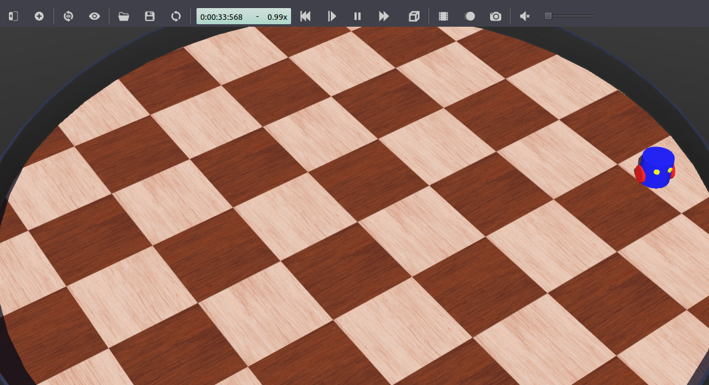

设置机器人模拟（高级）
目标： 通过添加避障节点扩展机器人模拟。
背景
在本教程中，您将扩展第一部分教程中创建的软件包：设置机器人仿真（基础）。目标是使用机器人的距离传感器实现一个ROS 2节点，用于避开障碍物。本教程重点介绍使用带有``webots_ros2_driver``接口的机器人设备。
先决条件
这是教程的第一部分的延续：设置机器人仿真（基础）。必须从第一部分开始设置自定义软件包和必要文件。
任务
1 更新 my_robot.urdf
如在 设置机器人仿真（基础） 中所述，webots_ros2_driver 包含了直接与 ROS 2 接口的大多数 Webots 设备的插件。可以使用 URDF 文件中的 <device> 标签加载这些插件。reference 属性应与 Webots 设备的 name 参数匹配。所有现有接口及其对应的参数列表可以在 设备参考页面 找到。对于在 URDF 文件中未配置的可用设备，将自动创建接口，并使用 ROS 参数的默认值（例如 update rate、topic name 和 frame name）。
在 my_robot.urdf 中，用以下内容替换整个内容：
<?xml version="1.0" ?>
<robot name="My robot">
<webots>
<device reference="ds0" type="DistanceSensor">
<ros>
<topicName>/left_sensor</topicName>
<alwaysOn>true</alwaysOn>
</ros>
</device>
<device reference="ds1" type="DistanceSensor">
<ros>
<topicName>/right_sensor</topicName>
<alwaysOn>true</alwaysOn>
</ros>
</device>
<plugin type="my_package.my_robot_driver.MyRobotDriver" />
</webots>
</robot>
<?xml version="1.0" ?>
<robot name="My robot">
<webots>
<device reference="ds0" type="DistanceSensor">
<ros>
<topicName>/left_sensor</topicName>
<alwaysOn>true</alwaysOn>
</ros>
</device>
<device reference="ds1" type="DistanceSensor">
<ros>
<topicName>/right_sensor</topicName>
<alwaysOn>true</alwaysOn>
</ros>
</device>
<plugin type="my_robot_driver::MyRobotDriver" />
</webots>
</robot>
除了您自定义的插件外，``webots_ros2_driver``将解析引用**DistanceSensor**节点的``<device>``标签，并使用``<ros>``标签中的标准参数来启用传感器并命名其主题。
2 创建一个ROS节点以避免障碍物
机器人将使用一个标准的ROS节点来检测墙壁并发送电机指令以避免碰撞。在``my_package/my_package/``文件夹中创建一个名为``obstacle_avoider.py``的文件，并添加以下代码：
import rclpy
from rclpy.node import Node
from sensor_msgs.msg import Range
from geometry_msgs.msg import Twist
MAX_RANGE = 0.15
class ObstacleAvoider(Node):
def __init__(self):
super().__init__('obstacle_avoider')
self.__publisher = self.create_publisher(Twist, 'cmd_vel', 1)
self.create_subscription(Range, 'left_sensor', self.__left_sensor_callback, 1)
self.create_subscription(Range, 'right_sensor', self.__right_sensor_callback, 1)
def __left_sensor_callback(self, message):
self.__left_sensor_value = message.range
def __right_sensor_callback(self, message):
self.__right_sensor_value = message.range
command_message = Twist()
command_message.linear.x = 0.1
if self.__left_sensor_value < 0.9 * MAX_RANGE or self.__right_sensor_value < 0.9 * MAX_RANGE:
command_message.angular.z = -2.0
self.__publisher.publish(command_message)
def main(args=None):
rclpy.init(args=args)
avoider = ObstacleAvoider()
rclpy.spin(avoider)
# Destroy the node explicitly
# (optional - otherwise it will be done automatically
# when the garbage collector destroys the node object)
avoider.destroy_node()
rclpy.shutdown()
if __name__ == '__main__':
main()
此节点将在此处创建一个用于指令发布的发布者，并订阅传感器主题：
self.__publisher = self.create_publisher(Twist, 'cmd_vel', 1)
self.create_subscription(Range, 'left_sensor', self.__left_sensor_callback, 1)
self.create_subscription(Range, 'right_sensor', self.__right_sensor_callback, 1)
当左侧传感器接收到测量值时，它将被复制到一个成员字段中：
def __left_sensor_callback(self, message):
self.__left_sensor_value = message.range
最后，当右侧传感器接收到测量值时，将向``/cmd_vel``主题发送一条消息。``command_message``将至少在``linear.x``中注册前进速度，以便在没有检测到障碍物时使机器人移动。如果任何两个传感器都检测到障碍物，``command_message``还将在``angular.z``中注册旋转速度，以使机器人向右转动。
def __right_sensor_callback(self, message):
self.__right_sensor_value = message.range
command_message = Twist()
command_message.linear.x = 0.1
if self.__left_sensor_value < 0.9 * MAX_RANGE or self.__right_sensor_value < 0.9 * MAX_RANGE:
command_message.angular.z = -2.0
self.__publisher.publish(command_message)
机器人将使用一个标准ROS节点来检测墙壁并发送电机命令以避开它。在``my_package/include/my_package``文件夹中，创建一个名为``ObstacleAvoider.hpp``的头文件，并添加以下代码：
#include <memory>
#include "geometry_msgs/msg/twist.hpp"
#include "rclcpp/rclcpp.hpp"
#include "sensor_msgs/msg/range.hpp"
class ObstacleAvoider : public rclcpp::Node {
public:
explicit ObstacleAvoider();
private:
void leftSensorCallback(const sensor_msgs::msg::Range::SharedPtr msg);
void rightSensorCallback(const sensor_msgs::msg::Range::SharedPtr msg);
rclcpp::Publisher<geometry_msgs::msg::Twist>::SharedPtr publisher_;
rclcpp::Subscription<sensor_msgs::msg::Range>::SharedPtr left_sensor_sub_;
rclcpp::Subscription<sensor_msgs::msg::Range>::SharedPtr right_sensor_sub_;
double left_sensor_value{0.0};
double right_sensor_value{0.0};
};
在``my_package/src``文件夹中，创建一个名为``ObstacleAvoider.cpp``的源文件，并添加以下代码：
#include "my_package/ObstacleAvoider.hpp"
#define MAX_RANGE 0.15
ObstacleAvoider::ObstacleAvoider() : Node("obstacle_avoider") {
publisher_ = create_publisher<geometry_msgs::msg::Twist>("/cmd_vel", 1);
left_sensor_sub_ = create_subscription<sensor_msgs::msg::Range>(
"/left_sensor", 1,
std::bind(&ObstacleAvoider::leftSensorCallback, this,
std::placeholders::_1));
right_sensor_sub_ = create_subscription<sensor_msgs::msg::Range>(
"/right_sensor", 1,
std::bind(&ObstacleAvoider::rightSensorCallback, this,
std::placeholders::_1));
}
void ObstacleAvoider::leftSensorCallback(
const sensor_msgs::msg::Range::SharedPtr msg) {
left_sensor_value = msg->range;
}
void ObstacleAvoider::rightSensorCallback(
const sensor_msgs::msg::Range::SharedPtr msg) {
right_sensor_value = msg->range;
auto command_message = std::make_unique<geometry_msgs::msg::Twist>();
command_message->linear.x = 0.1;
if (left_sensor_value < 0.9 * MAX_RANGE ||
right_sensor_value < 0.9 * MAX_RANGE) {
command_message->angular.z = -2.0;
}
publisher_->publish(std::move(command_message));
}
int main(int argc, char *argv[]) {
rclcpp::init(argc, argv);
auto avoider = std::make_shared<ObstacleAvoider>();
rclcpp::spin(avoider);
rclcpp::shutdown();
return 0;
}
此节点将在此处创建一个用于指令发布的发布者，并订阅传感器主题：
publisher_ = create_publisher<geometry_msgs::msg::Twist>("/cmd_vel", 1);
left_sensor_sub_ = create_subscription<sensor_msgs::msg::Range>(
"/left_sensor", 1,
std::bind(&ObstacleAvoider::leftSensorCallback, this,
std::placeholders::_1));
right_sensor_sub_ = create_subscription<sensor_msgs::msg::Range>(
"/right_sensor", 1,
std::bind(&ObstacleAvoider::rightSensorCallback, this,
std::placeholders::_1));
当左侧传感器接收到测量值时，它将被复制到一个成员字段中：
void ObstacleAvoider::leftSensorCallback(
const sensor_msgs::msg::Range::SharedPtr msg) {
left_sensor_value = msg->range;
}
最后，当右侧传感器接收到测量值时，将向``/cmd_vel``主题发送一条消息。``command_message``将至少在``linear.x``中注册前进速度，以便在没有检测到障碍物时使机器人移动。如果任何两个传感器都检测到障碍物，``command_message``还将在``angular.z``中注册旋转速度，以使机器人向右转动。
void ObstacleAvoider::rightSensorCallback(
const sensor_msgs::msg::Range::SharedPtr msg) {
right_sensor_value = msg->range;
auto command_message = std::make_unique<geometry_msgs::msg::Twist>();
command_message->linear.x = 0.1;
if (left_sensor_value < 0.9 * MAX_RANGE ||
right_sensor_value < 0.9 * MAX_RANGE) {
command_message->angular.z = -2.0;
}
publisher_->publish(std::move(command_message));
}
3 更新附加文件
您需要修改这另外两个文件以启动您的新节点。
编辑 setup.py，将 'console_scripts' 替换为：
'console_scripts': [
'my_robot_driver = my_package.my_robot_driver:main',
'obstacle_avoider = my_package.obstacle_avoider:main'
],
这将为 obstacle_avoider 节点添加一个入口点。
编辑 CMakeLists.txt 文件，并添加 obstacle_avoider 的编译和安装：
cmake_minimum_required(VERSION 3.5)
project(my_package)
if(NOT CMAKE_CXX_STANDARD)
set(CMAKE_CXX_STANDARD 14)
endif()
# Besides the package specific dependencies we also need the `pluginlib` and `webots_ros2_driver`
find_package(ament_cmake REQUIRED)
find_package(rclcpp REQUIRED)
find_package(std_msgs REQUIRED)
find_package(geometry_msgs REQUIRED)
find_package(pluginlib REQUIRED)
find_package(webots_ros2_driver REQUIRED)
# Export the plugin configuration file
pluginlib_export_plugin_description_file(webots_ros2_driver my_robot_driver.xml)
# Obstacle avoider
include_directories(
include
)
add_executable(obstacle_avoider
src/ObstacleAvoider.cpp
)
ament_target_dependencies(obstacle_avoider
rclcpp
geometry_msgs
sensor_msgs
)
install(TARGETS
obstacle_avoider
DESTINATION lib/${PROJECT_NAME}
)
install(
DIRECTORY include/
DESTINATION include
)
# MyRobotDriver library
add_library(
${PROJECT_NAME}
SHARED
src/MyRobotDriver.cpp
)
target_include_directories(
${PROJECT_NAME}
PRIVATE
include
)
ament_target_dependencies(
${PROJECT_NAME}
pluginlib
rclcpp
webots_ros2_driver
)
install(TARGETS
${PROJECT_NAME}
ARCHIVE DESTINATION lib
LIBRARY DESTINATION lib
RUNTIME DESTINATION bin
)
# Install additional directories.
install(DIRECTORY
launch
resource
worlds
DESTINATION share/${PROJECT_NAME}/
)
ament_export_include_directories(
include
)
ament_export_libraries(
${PROJECT_NAME}
)
ament_package()
打开 robot_launch.py 文件，并将 def generate_launch_description(): 替换为：
def generate_launch_description():
package_dir = get_package_share_directory('my_package')
robot_description = pathlib.Path(os.path.join(package_dir, 'resource', 'my_robot.urdf')).read_text()
webots = WebotsLauncher(
world=os.path.join(package_dir, 'worlds', 'my_world.wbt')
)
my_robot_driver = Node(
package='webots_ros2_driver',
executable='driver',
output='screen',
additional_env={'WEBOTS_CONTROLLER_URL': controller_url_prefix() + 'my_robot'},
parameters=[
{'robot_description': robot_description},
]
)
obstacle_avoider = Node(
package='my_package',
executable='obstacle_avoider',
)
return LaunchDescription([
webots,
my_robot_driver,
obstacle_avoider,
launch.actions.RegisterEventHandler(
event_handler=launch.event_handlers.OnProcessExit(
target_action=webots,
on_exit=[launch.actions.EmitEvent(event=launch.events.Shutdown())],
)
)
])
这将创建一个包含在 LaunchDescription 中的 obstacle_avoider 节点。
4. 测试避障代码。
在ROS 2工作空间的终端中启动仿真：
在ROS 2工作空间的终端中运行：
colcon build
source install/local_setup.bash
ros2 launch my_package robot_launch.py
在WSL ROS 2工作空间的终端中运行：
colcon build
export WEBOTS_HOME=/mnt/c/Program\ Files/Webots
source install/local_setup.bash
ros2 launch my_package robot_launch.py
确保在WSL中使用``/mnt``前缀来访问Windows文件系统中Webots安装文件夹的路径。
在主机机器的终端中（而不是虚拟机中），如果还没有这样做，请指定Webots安装文件夹（例如``/Applications/Webots.app``），然后使用以下命令启动服务器：
export WEBOTS_HOME=/Applications/Webots.app
python3 local_simulation_server.py
请注意，一旦ROS 2节点结束，服务器将继续运行。您无需每次启动新的仿真时都重新启动它。从ROS 2工作空间中的Linux虚拟机终端中，使用以下命令构建和启动您的自定义包：
cd ~/ros2_ws
colcon build
source install/local_setup.bash
ros2 launch my_package robot_launch.py
您的机器人应该向前移动，在撞到墙壁之前应该顺时针转向。您可以在Webots中按下``Ctrl+F10``，或转到“View”菜单、“Optional Rendering”和“Show DistanceSensor Rays”以显示机器人的距离传感器范围。
